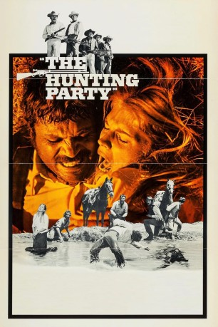

#9491 Leise weht der Wind des Todes
Alternativ: The Hunting Party
 
 IMDB-Wertung: 6.5 / 10
IMDB-Wertung: 6.5 / 10  Metascore: 0
Metascore: 0 
Brandt Ruger (Gene Hackman) betrachtet seine junge Frau Melissa (Candice Bergen) wie sein Eigentum und wacht mit Argusaugen über sie. Eines Tages wird Melissa von dem Gesetzlosen Frank Calder (Oliver Reed) und seiner Bande gekidnappt, weil sie ihnen das Lesen und Schreiben lehren soll. Melissas Ehemann, mächtigster Großfarmer der Umgebung, skrupelloser Sadist und Besitzer mehrerer Jagdgewehre, bläst jedoch sofort zum Rachefeldzug, an dem sich eine Schar betuchter Jagdgenossen beteiligt. In der Zwischenzeit hat sich Melissa, die von Frank vergewaltigt wurde, in ihn verliebt. Doch ihr Glück findet mit der Ankunft von Ruger, seinen Freunden und ihren neuartigen Gewehren ein jähes Ende.
Jahr: 1971
Dauer: 110 Minuten
FSK: 18
Land: England Studio: United ArtistsTonspuren:
Untertitel:
Auflösung: 1080p (1920x1040) Größe: 7833 MB
Genre: Action, Drama, Western
Regisseur: Don Medford
Drehbuch: Gilbert Ralston, Lou Morheim, William W. Norton, Gilbert Ralston, Lou Morheim
Soundtrack: Riz Ortolani
Darsteller:
 Oliver Reed als Frank Calder
Oliver Reed als Frank Calder Gene Hackman als Brandt Ruger
Gene Hackman als Brandt Ruger Candice Bergen als Melissa Ruger
Candice Bergen als Melissa Ruger Simon Oakland als Matthew Gunn
Simon Oakland als Matthew Gunn L.Q. Jones als Hog Warren
L.Q. Jones als Hog Warren Mitchell Ryan als Doc Harrison
Mitchell Ryan als Doc Harrison- William Watson als Jim Loring
 G.D. Spradlin als Sam Bayard
G.D. Spradlin als Sam Bayard- Bernard Kay als Buford King
- Francesca Tu als Chinese Girl
 Marian Collier als Teacher
Marian Collier als Teacher- Ronald Howard als Watt Nelson
- Rayford Barnes als Crimp
- Richard Adams als Owney Clark
- Dean Selmier als Collins
- Sarah Atkinson als Redhead
- Ralph Brown als Sheriff
- Charly Bravo als Cowboy
- Rafael Albaicín als Mexican (uncredited)
- Eugenio García als Mario (uncredited)
- Christine Larroude als Bit Part (uncredited)
- Stephanie Pieritz als Bit Part (uncredited)
- Emilio Rodríguez als Priest (uncredited)
- Max Slaten als Telegrapher (uncredited)
- Lilibeth Solison als Blonde (uncredited)
- Bud Strait als Cowboy (uncredited)
- María Luisa Tovar als Mexican Girl (uncredited)
Datei: X:\HD-Western-1960-1979\Leise weht der Wind des Todes (1971, FSK18, 1920x1040).mkv seit 04.09.2018
Festplatte: HD Eastern+Western
 Es gibt insgesamt 110 Filme in der Gruppe 'HD-Western-1960-1979'
Es gibt insgesamt 110 Filme in der Gruppe 'HD-Western-1960-1979'